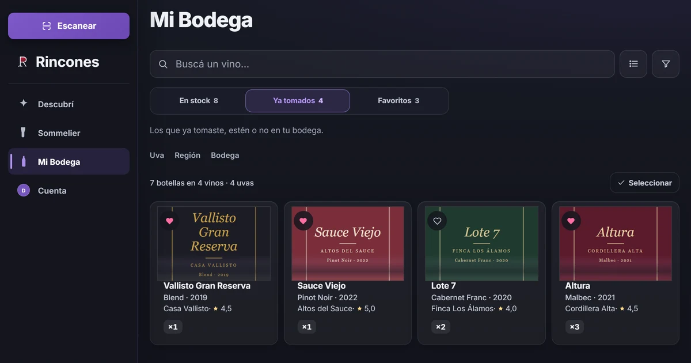

Rincones
A wine cellar app: you photograph the label and it fills in the bottle's details.
- The problem
- Keeping a wine collection up to date means typing in every label by hand.
- What I built
- A full-stack app with user accounts and an admin area, installable like a native app.
- How it works
- Google Gemini reads the label and pre-fills the entry. If that call fails, a local OCR takes over, so the feature keeps working.
React · Node.js · Express · MongoDB · Gemini API